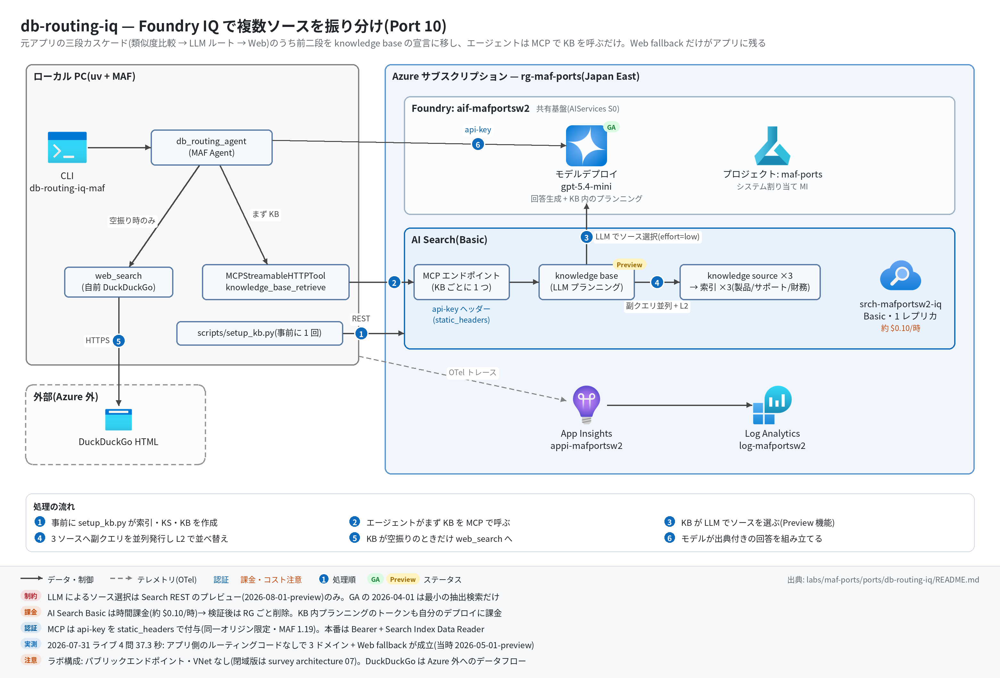

db-routing-iq 実行ガイド
対象:
labs/maf-ports/ports/db-routing-iq/(Port 10・パターン: 複数ナレッジソース振り分け — Foundry IQ knowledge base の agentic retrieval を MCP 経由で使う単一エージェント + Web fallback)
最終確認: 2026-09-29 オフライン(54 passed・ruff clean・依存 agent-framework-core 1.19.0 / agent-framework-openai 1.14.4 / openai 3.20.0 / mcp 1.30.0・Search REST2026-08-01-preview)/ ライブ: 2026-07-31(当時の構成 =2026-05-01-preview・MCP の api-key はhttp_client方式。Azure リソースは削除済み — 再デプロイ手順は §5)
正は本 Markdown。 人間用 HTML(同じディレクトリのrunbook.html)はpython3 labs/tools/build_runbooks.pyで生成する(HTML は直接編集しない)。設計判断と移植の学びは README。
1. このパターンで確かめること
- 元アプリがアプリ側で 150 行かけていた三段カスケード(全 DB 類似度比較 → LLM ルート → Web fallback)のうち前二段が、knowledge base の宣言(KS の
description×3 +retrievalInstructions+retrievalReasoningEffort: low)に置き換わり、アプリ側ルーティングコードなしで製品 / サポート / 財務の質問が正しいソースから答えられること。 - ドメイン外の質問では KB が空振りし、エージェントが instructions に従って
web_search(自前 DuckDuckGo)に落ち、回答がWeb Search Result:で始まること(カスケードの「端」はアプリの責務として残る)。 - 技術選定上の意味: ルーティングの可観測性と決定性(どのソースを何のスコアで選んだか)は MCP 経由では見えなくなる代わりに、副クエリ並列 + L2 リランクと KB の再利用性が手に入る。LLM によるソース選択は Search REST のプレビュー版でしか使えない(README 学び 1・4)。
2. 構成

| コンポーネント | 役割 | 課金 |
|---|---|---|
MAF Agent db_routing_agent(ローカル) |
knowledge_base_retrieve(MCP)を先に呼び、空振り時だけ web_search を呼んで回答を組み立てる |
なし |
Azure AI Search Basic(本ポート固有、srch-<baseName>-iq) |
インデックス ×3(products / support / finance)+ searchIndex knowledge source ×3 + knowledge base ×1。KB ごとの MCP エンドポイント | 時間課金(約 $0.10/時 ≒ 月 $75 規模)+ リトリーバル(リランク)のトークン課金(月次無料枠あり) |
| モデルデプロイ(共有基盤、gpt-5.4-mini) | エージェントの回答生成 + KB 内の LLM クエリプランニング(同じデプロイをキーで参照) | トークン従量(1 問あたり KB 内で 1 回余分に LLM が動く) |
| DuckDuckGo HTML(外部) | Web fallback | なし(Azure 外へのデータフロー) |
| Application Insights(共有基盤) | OTel トレース | 取り込み量従量 |
3. 前提
| 区分 | 必要なもの | 備考 |
|---|---|---|
| ツール | uv(Python 3.11 以上。uv が取得。検証は 3.13) | オフライン実行はこれだけ |
| Azure(ライブのみ) | 共有基盤(infra/shared.bicep)+ 本ポートの AI Search Basic(infra/main.bicep) | 課金あり。Serverless(Developer tier・プレビュー)は使わないので 2026-09-13 からの Serverless 課金開始の影響はない |
| 権限 | AI Search の管理キー(KB 作成と MCP 認証の両方)と Foundry の API キー(KB のクエリプランニング用)。Entra ID の RBAC は不要 | 本番は Bearer + Search Index Data Reader / 検索サービス MI + Cognitive Services User(README) |
| リージョン | agentic retrieval が使えるリージョン(7 月は japaneast で実測) | — |
環境変数(labs/maf-ports/.env。雛形は labs/maf-ports/.env.example — AZURE_SEARCH_* は雛形にないので追記する。ライブ実行時のみ必要):
| 変数 | 用途 | 取得元 |
|---|---|---|
FOUNDRY_OPENAI_V1_ENDPOINT |
エージェントの呼び出し先。KB の models[].resourceUri にも(/openai/v1 を除いて)使う |
shared.bicep 出力 openaiV1Endpoint |
FOUNDRY_MODEL |
エージェントと KB クエリプランニングのデプロイ名 | shared.bicep 出力 modelDeploymentName |
FOUNDRY_API_KEY |
エージェントの API キー + KB 定義の apiKey(KB 内プランニング用) |
az cognitiveservices account keys list -n aif-<baseName> -g <rg> |
AZURE_SEARCH_ENDPOINT |
https://srch-<baseName>-iq.search.windows.net |
main.bicep 出力 searchEndpoint |
AZURE_SEARCH_ADMIN_KEY |
setup_kb.py の REST と MCP の api-key ヘッダー |
main.bicep 出力 searchAdminKey |
DB_ROUTING_KB_NAME |
KB 名(任意。既定 db-routing-kb) |
— |
APPLICATIONINSIGHTS_CONNECTION_STRING |
トレース送信先(未設定ならトレース無効) | shared.bicep 出力 appInsightsConnectionString |
4. オフライン実行(Azure 不要・無料)
cd labs/maf-ports/ports/db-routing-iq
uv sync --extra dev
uv run pytest # 期待: 54 passed, 4 deselected(ネットワーク不要)
uv run ruff check . # 期待: All checks passed!オフラインテストが固定している主な挙動:
- KB / KS / インデックスのペイロード: 3 ソースを束ね、
retrievalReasoningEffort: {kind: low}+ 元アプリのルーティング規則を移したretrievalInstructions、outputModeなし(回答統合はエージェント側)、インデックスはベクトルなし + semantic configuration 必須(tests/test_kb_setup.pyの 18 件) - MCP エンドポイントの形
{search}/knowledgebases/{kb}/mcp?api-version=2026-08-01-preview(test_kb_mcp_url_shape/test_api_version_is_the_preview_that_supports_llm_routing) - 実
MCPStreamableHTTPToolのハンドシェイク(initialize / tools/list)に最初からapi-keyが付き、allow-list でknowledge_base_retrieveだけが展開される(test_handshake_carries_api_key_and_exposes_only_retrieve。偽 KB サーバーは MockTransport) - Web fallback は失敗を例外にせず文字列で返す(
test_web_search_turns_failures_into_text) - 評価データの各ファクト(1.2kg / 30 日以内 / 84 億円 …)が期待ドメインのコーパスにしか存在しない(
test_expected_fact_exists_only_in_expected_domain)— ライブで「正答 = 正しいソースから引いた」と推論できる根拠 - ルーティングの観測点 = 呼ばれたツール名の出現順(
test_summarize_tool_calls_extracts_names_in_order_without_duplicates)
5. ライブ実行(Azure 必要・課金あり)
5.1 デプロイ
# 共有基盤が未作成なら先に作る(labs/maf-ports/README.md「実行の前提」と infra/shared.bicep 冒頭コメント)
cd labs/maf-ports
az deployment group create -g <rg> -f infra/shared.bicep \
-p baseName=<baseName> modelName=gpt-5.4-mini modelVersion=<版> modelCapacity=10
# 本ポート: AI Search Basic(時間課金が始まる)
cd ports/db-routing-iq
az deployment group create -g <rg> -f infra/main.bicep -p baseName=<baseName>
az deployment group show -g <rg> -n main --query "properties.outputs.{endpoint:searchEndpoint.value, key:searchAdminKey.value}"
# → AZURE_SEARCH_ENDPOINT / AZURE_SEARCH_ADMIN_KEY を labs/maf-ports/.env に追記
# 第 2 段: インデックス ×3 → 文書投入 → knowledge source ×3 → knowledge base(データプレーン。Bicep では作れない)
uv sync --extra dev --extra live
uv run python scripts/setup_kb.py # 冪等(PUT + mergeOrUpload)
uv run python scripts/setup_kb.py --recreate # KB → KS → インデックスの逆順で消してから作り直すsetup_kb.py の期待出力(チャンク数はオフラインで build_documents から算出した値):
index ready: db-routing-products (3 chunks)
index ready: db-routing-support (3 chunks)
index ready: db-routing-finance (3 chunks)
knowledge source ready: db-routing-products-ks
knowledge source ready: db-routing-support-ks
knowledge source ready: db-routing-finance-ks
knowledge base ready: db-routing-kb
MCP endpoint: https://srch-<baseName>-iq.search.windows.net/knowledgebases/db-routing-kb/mcp?api-version=2026-08-01-preview5.2 実行
cd labs/maf-ports/ports/db-routing-iq
uv run db-routing-iq-maf "Aurora X10 の本体重量とバッテリーでの連続投影時間は?" # → products
uv run db-routing-iq-maf "返品は何日以内に申請すればいいですか?" # → support
uv run db-routing-iq-maf --json "FY2025 の売上高と前年比は?" # → finance
uv run db-routing-iq-maf "2026 年現在の日本の首相は誰ですか?" # → web fallback
uv run pytest -m live # 期待: 4 passed(7 月の実測 37.3 秒)CLI のオプション: --json(question / answer / tool_calls を JSON で出す)/ --timeout(全体タイムアウト秒、既定 180)。
期待される出力の例(stderr の [kb] / [tools] 行は CLI の書式どおり。回答文は例 — 数値ファクトは data/ のコーパスの値):
tracing: App Insights 有効
[kb] https://srch-<baseName>-iq.search.windows.net/knowledgebases/db-routing-kb/mcp?api-version=2026-08-01-preview
[tools] knowledge_base_retrieve
Aurora X10 の本体重量は 1.2kg、バッテリーでの連続投影時間は最大 4 時間です(出典: Aurora X10 製品仕様)。ドメイン外の質問では [tools] knowledge_base_retrieve, web_search となり、回答が Web Search Result: で始まる。
6. 確認観点
| 確認 | # | 観点 | 確認方法 | 期待結果 |
|---|---|---|---|---|
| 1 | 正常系: KB 作成 | uv run python scripts/setup_kb.py |
§5.1 の 8 行が出て exit 0。プレビュー API のエラー時は HTTP ステータスとレスポンス本文がそのまま出る | |
| 2 | 正常系: ドメイン内 3 問 | §5.2 の products / support / finance の 3 問 | 各回答にそのドメインにしかないファクト(1.2kg / 30 日以内 / 84 億円)が入り、[tools] が knowledge_base_retrieve のみ |
|
| 3 | 分岐: Web fallback | ドメイン外の質問 | [tools] に web_search が加わり、回答が Web Search Result: で始まる(KB の結果だけで答えていない) |
|
| 4 | 異常系: 認証 | AZURE_SEARCH_ADMIN_KEY をわざと 1 文字変えて CLI を実行 |
MCP 接続(initialize)の段階で失敗する(ツール呼び出し前に落ちる = キーが接続時から必要なことの確認)。戻したら正常に戻る | |
| 5 | 異常系: タイムアウト | --timeout 1 |
error: request timed out after 1 seconds で exit 1 |
|
| 6 | パターン固有: ルーティングの観測の限界 | --json の tool_calls と回答を見る |
どのソースを選んだかは MCP 応答からは分からず、回答中のファクトで推論する(retrieve の activity は MCP では返らない — README 学び 3) |
|
| 7 | 観測: トレース到達 | §7 の KQL | invoke_agent db_routing_agent、execute_tool knowledge_base_retrieve(fallback 時は execute_tool web_search)、MCP の tools/call knowledge_base_retrieve スパンが出る |
|
| 8 | コスト | ポータルの AI Search → 概要 / コスト分析 | Basic が起動している間は時間課金が進む。検証が終わったらすぐ §8 | |
| 9 | 後片付け | az group show -n <rg> |
削除後は ResourceGroupNotFound。KB は setup_kb.py で数分で再構築できる |
7. トレース・評価の確認
az monitor app-insights query --app appi-<baseName> -g <rg> \
--analytics-query "dependencies | where timestamp > ago(30m) | summarize count() by name | order by name asc"- 期待するスパン名:
invoke_agent db_routing_agent、chat <モデル名>(function-calling ループの反復ごと)、execute_tool knowledge_base_retrieve/execute_tool web_search - agent-framework-core 1.19 では MCP クライアント側のスパン(
initialize/tools/list/tools/call knowledge_base_retrieve)も出る(7 月のライブ時点の 1.13 では未確認) - KB 内部の LLM クエリプランニングと副クエリはサービス側で動くので、このトレースには出ない。ルーティングの中身を見たいときは REST の retrieve アクション(
POST {search}/knowledgebases/{kb}/retrieve?api-version=2026-08-01-preview、includeActivity: true)を別に叩く - 評価:
tests/eval_dataset.jsonl(7 ケース)の定量評価は未実装。--jsonのtool_calls+ 回答を Foundry の評価器に渡す場合は critique-loop の runbook の evals 手順が流用できる
8. 片付け
az group delete -n <rg> --yes --no-wait # AI Search Basic の時間課金を止める(共有基盤ごと消すならこれで全部)
# 共有基盤は残して AI Search だけ止める場合
az search service delete -n srch-<baseName>-iq -g <rg> --yes9. トラブルシューティング
| 症状 | 原因 | 対処 |
|---|---|---|
setup_kb.py が 400(プロパティ不明など) |
Search REST の api-version と KB / KS ペイロードの食い違い。本ポートは 2026-09-29 に 2026-08-01-preview へ更新し、この版ではライブ未検証 |
レスポンス本文を確認。版起因なら src/db_routing_iq_maf/config.py の SEARCH_API_VERSION を検証済みの "2026-05-01-preview" に戻す(テスト 2 件の期待値も戻す) |
setup_kb.py の KB 作成だけ 400 / 403 |
KB の models(キー認証)の不備、または FOUNDRY_OPENAI_V1_ENDPOINT からリソース URI を導出できていない |
.env の値を確認(https://<sub>.openai.azure.com/openai/v1 の形)。MI 経路にする場合は Basic 以上 + 検索サービス MI に Cognitive Services User |
| KB の作成数上限で失敗 | agentic retrieval の上限は SKU 依存(Free は KS / KB 各 3、S3 HD は 0)(casebook P-R08 ほか) | Basic 以上を使う(main.bicep の既定) |
CLI が MCP server failed to initialize |
api-key 不一致、KB 未作成、DB_ROUTING_KB_NAME の不一致 |
setup_kb.py の最終行の MCP endpoint と [kb] 行の URL が一致するか確認 |
接続時に 'InitializeResult' object has no attribute 'protocolVersion' |
mcp 2.x が入っている(MAF 1.19 は mcp<2 前提) | pyproject.toml の mcp>=1.30,<2 を外していないか確認して uv sync |
ドメイン外なのに web_search が呼ばれない |
fallback は instructions ベース(モデル裁量) | 回答が「情報がない」旨ならそれも許容範囲(ライブスモークは web_search 呼び出しか Web Search Result: のどちらかで判定)。DDG 側の失敗は Search failed: の文字列で返る |
| 時間課金が止まらない | AI Search Basic はクエリがなくても課金 | §8 で削除 |
10. 関連・更新履歴
- 設計判断と学び: README
- Foundry IQ の GA / プレビュー内訳と MCP 接続: features/04 ツール・ナレッジ
- 詰まりどころ(Foundry IQ の「GA」の範囲など): casebook 02 E. RAG とナレッジ
- 同じ MCP 接続パターン(static_headers): github-mcp。アプリ側で CRAG を組んだ対照例: corrective-rag
| 日付 | 内容 |
|---|---|
| 2026-09-29 | 初版(依存を agent-framework-core 1.19.0 / openai 3.20.0 / mcp 1.30.0 に更新。Search REST を 2026-08-01-preview へ、MCP の api-key を static_headers へ変更 — いずれもライブ未検証。構成図を v2(日本語・処理順バッジ・注記帯)に更新) |